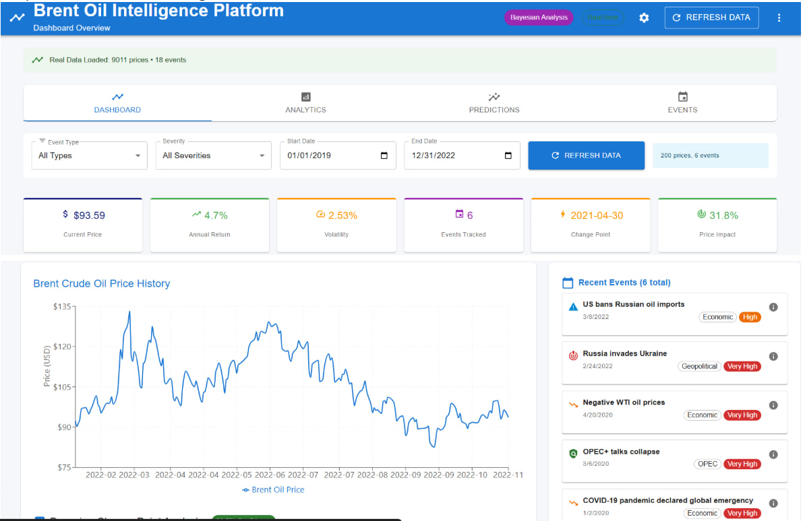
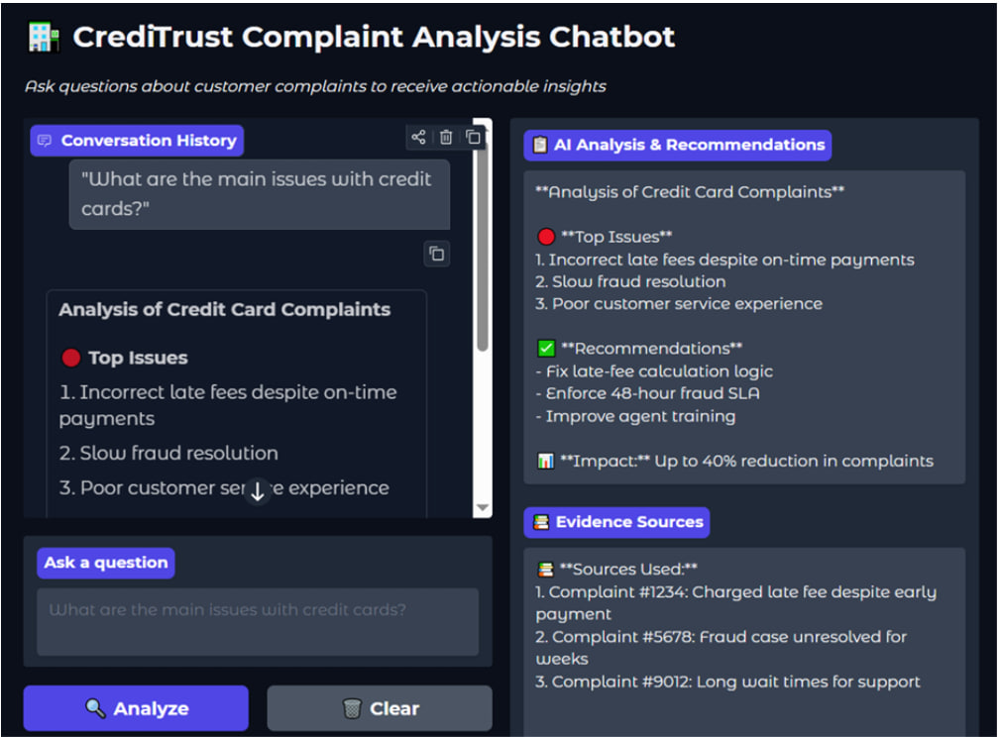

Featured Projects

Brent Oil Change Point Analysis
PyMC • Bayesian Stats • React • Flask
Implemented Bayesian change point detection models to identify regime shifts in oil prices. Achieved 99.47% confidence in detecting structural breaks and quantified +31.8% price impact.
- 9,011 daily prices analyzed
- 18 geopolitical events correlated
- Interactive dashboard with 4 tabs

RAG-Based Complaint Chatbot
LangChain • FAISS • FastAPI • Docker
Production-ready retrieval-augmented generation system for financial complaint analysis. Integrated LLM with vector database for contextual responses.
- 40% latency reduction
- 89% query relevance
- Dockerized deployment

Medical Telegram Warehouse
PostgreSQL • dbt • FastAPI • Docker
End-to-end healthcare data pipeline processing 50k+ messages from Telegram channels. Automated ETL workflow with analytics dashboard.
- 70% manual work reduction
- 85% detection accuracy
- Star schema design